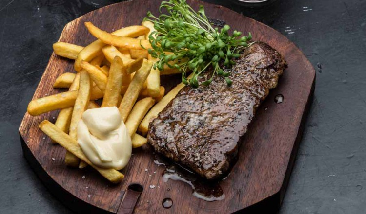

Steak Friet Recipe

Mmmmm... Dat wordt lekker!
Ingrediënten
Recept
- Haal het rundvlees een kwartier op voorhand uit de koelkast.
- Verwarm de pan voor en kruid intussen het biefstuk met peper en zout.
- Laat boter kleuren in de pan tot de kleur van hazelnoten. Leg de steaks in de pan. Zorg ervoor dat de pan niet te groot is voor het vlees, want anders gaat de boter te snel verbranden. Draai het vlees niet meteen om. Laat het eerst goed kleuren. Bak het vlees volgens de gewenste gaarheid en laat het voor het serveren 10 minuten rusten onder aluminiumfolie. Zo kan het vlees zich terug ontspannen en kunnen de sappen zich over het ganse stuk verdelen.
Serveer met braadjus, verse frietjes en sla.